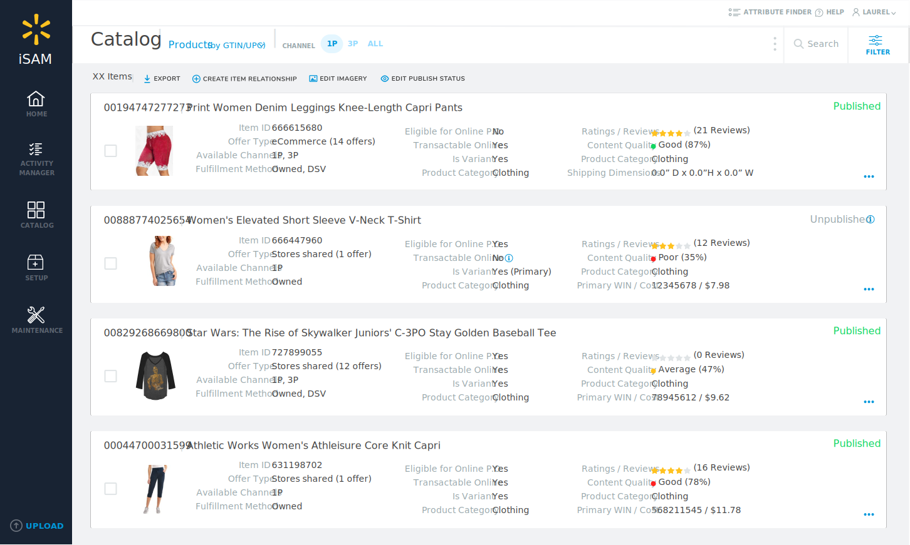
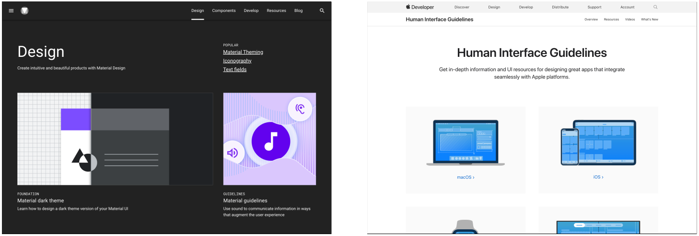
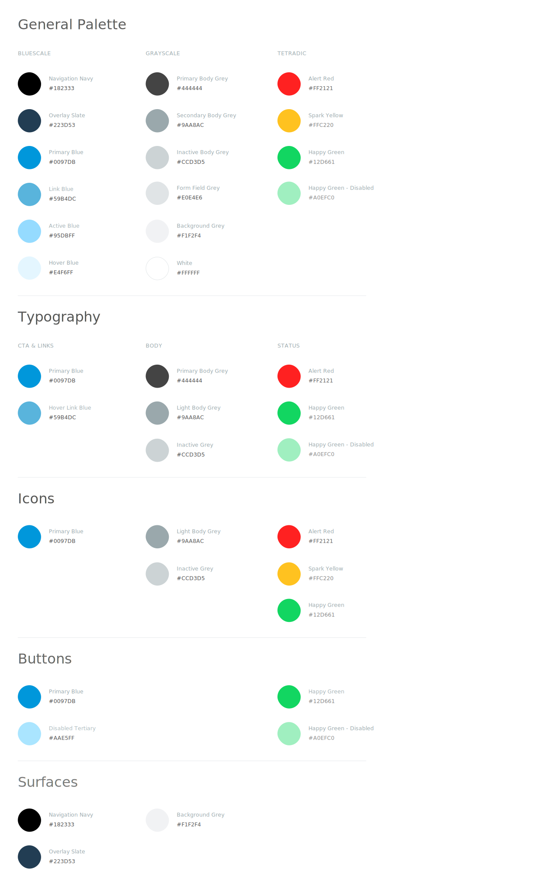
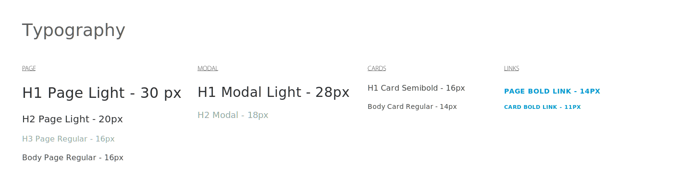
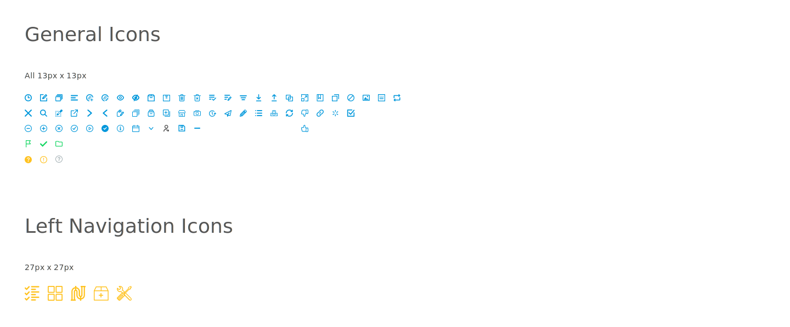
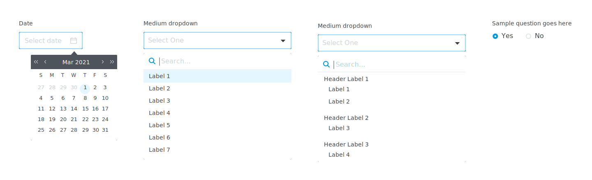
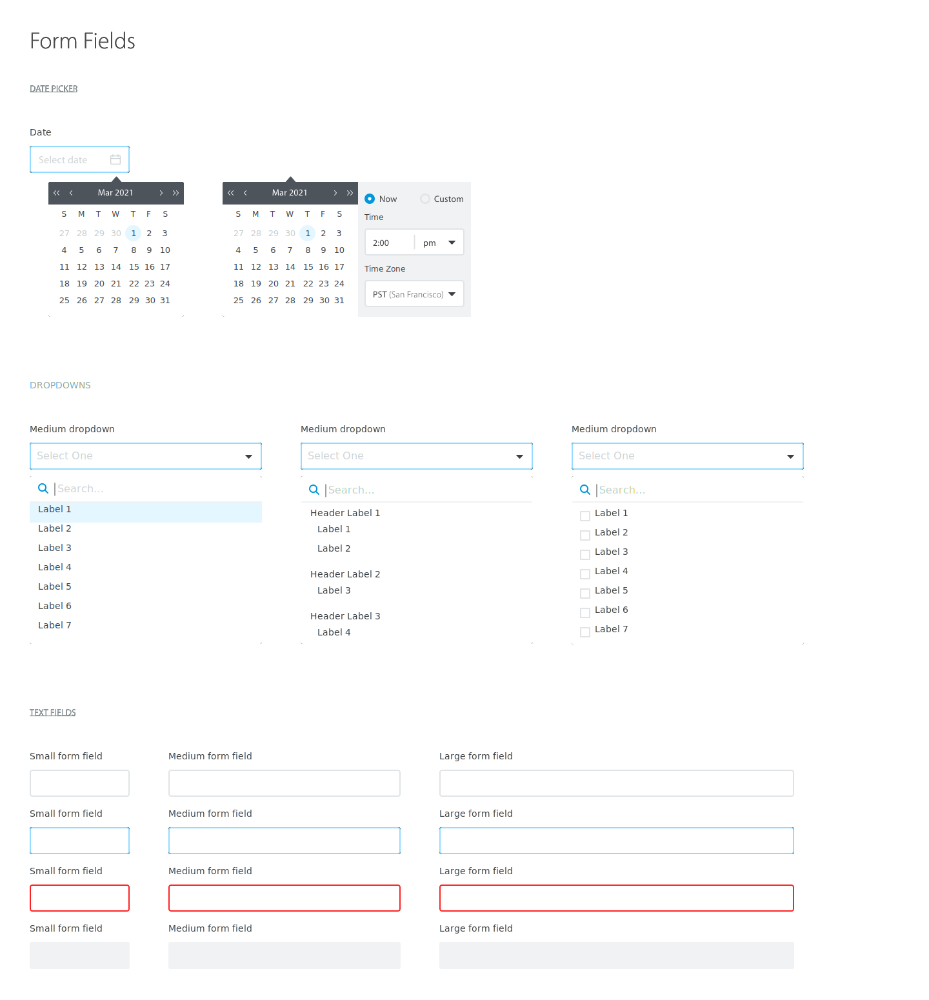

iSAM Design System
Role
UX Designer
Timeline
Feb 2020 - Aug 2021
Tools
Sketch, Zeplin
The Challenge
ISAM stands for Item Setup and Management which Walmart Associates use for setting up products to be sold both online and in stores. My task was to build a system that provides a unified set of UI, design rules, and patterns the design team can reuse in their individual.
BACKGROUND
There were some moving parts to this of course as this app was broken down into 3 different sub-products based on its users. Other teams also use the app's UI API to create their apps. This project will not only create alignment across team members but also be very impactful in terms of:
Because we have different versions of the same app, we still wanted to have the same ui patterns that solve for by the same source of truth a designer on our team can refer to. At this point, iSAM has been running with many users using it in their day to day work and our goal is to make sure we have parity across the different versions of the app. My first step is to see how other design systems organized everything
RESEARCH
Before taking any other path forward I decided to do some research on what I consider what a really good system looks like to me. I looked at examples like Google Material Design and Apple Human Interface Guidelines to see how they go about structuring component libraries and naming conventions for common patterns.
EXECUTION
I have to have a gameplan if I were to take on this huge project. I want to make sure that every primitive, element and pattern is accounted for before I orgainize and create assets for these living design systems.
- Audit
I must first go through our app and take inventory of first the primitives in our app to. Primitives are the visual elements like:
These are the building blocks that I will be basing our components and UI patterns after. I first took a look at all of our colors and took inventory of every possible color we use throughout the app. I them created buckets based on usage to see how we were reusing the same colors consistently.
The next step was to go through the app to take inventory of all the typography usages. Now that the colors are accounted for I can assign the correct tokens to the correct typography usage (i.e. if its a page link we woud use our link blue). Much like how I’ve organized the colors, I would take the typography usages and bucket them to the correct surface that they appear on be it in a link or on a modal.
Finally my last inventory excercise for primitives would be the icons. Through this excersise we were able to spot the places where we were inconsistent as where we are reusing the same icon for the wrong usage. I would wound up all the icons and first name them something that would be easy and natural to refer to before I would organize them into their correct sizes. I also added the possible states each icon can have as well so that when I get around to component building we can use the correct state of icon for the correct state of the component iteself.
- Creating Components
At this point the primitives and elements are all accounted for so it is just a matter of collecting all the components we see today in the app and creating reusable components for all the designers to use in all of their individual projects.
- Organization
So now that I have a pretty good foundation for components I would have to create an intuitive organization method to make these components easy to look. Each component would not only have different variants but also have different states to them based on which component it is.
CONCLUSION
To wrap up everything, what I've done to deliver on this project was to first take a look at what we needed out of this Design System which was a way for designers to efficiently use a source of truth to not only speedup their daily workflow but also stay consistent with the design guidelines already in place but not documented. I then audited our app taking inventory of all of our primpitives which I then took to create all of the components we see today. I finally took those very components to organize them so my users (coworkers) can easily navigate to them with minimal effort.